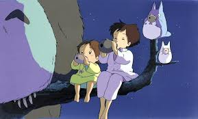

ორი და მამასთან ერთად გადადის იაპონიის სოფლად, რათა დრო გაატარონ ავადმყოფ დედასთან.
მათ აწყდებიან მითიური ტყის სპრაიტს და მისი ტყის მეგობრებს, რომლებთანაც მათ ბევრი ჯადოსნური თავგადასავალი აქვთ.
გამოშვების თარიღი: 1988 წლის 16 აპრილი (იაპონია)
რეჟისორი: ჰაიაო მიაძაკი
სიუჟეტი: ჰაიაო მიაძაკი
დისტრიბუტორი Walt Disney Pictures, Troma Entertainment, Toho Co., Ltd.
ბიუჯეტი: $41 მილიონი
